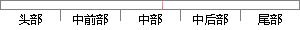

按键中断也是首先设置好相应的中断位，然后设置中断处理函数的地址，当有按键按下时，系统就会跳到对应的按键的中断处理函数。
片段位置图

相似结果
相似片段：的,一但接收到中断,内核就会调用对应的中断处理函数...1)当我按下按键产生电平变化,传到S3C2440的中断控制...3)然后,信号经过寄存器MASK,这是用来设置当前系统...
| 标题 | 《linux设备驱动归纳总结(六):1.中断的实现-nice_future-ChinaUnix...》 |
| 对比库 | PaperRater云论文库 |
| 网址 | http://blog.chinaunix.net/uid-26993600-id-3255666.html |
| 相似率 | 77.27% （轻度抄袭） |
※ 片段修改建议 ※
近似词参考：- 系统：体系
- 处理：处置 处置惩罚
- 地址：地点
- 相应：响应
- 中断：间断 中止 停止
- 首先：起首
系统自动生成语句： 按键间断也是起首设置好响应的间断位，然后设置间断处置函数的地点，当有按键按下时，体系就会跳到对应的按键的间断处置函数。
注：本片段修改建议为系统自动生成，仅供参考。